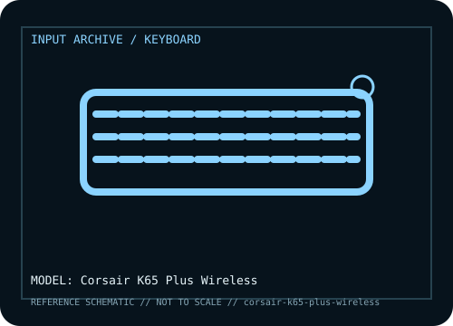

[ KEYBOARDS AND INTEGRATED POINTING DEVICES // IDENTIFIED COMPONENT ]
Corsair K65 Plus Wireless
75% mechanical keyboard with wired USB, Bluetooth, and 2.4 GHz SLIPSTREAM wireless modes, hot-swappable switches, and onboard media/control features.

MODEL IDENTIFICATION: K65 Plus Wireless; verify market code such as CH-91D401L-NA and regional layout. Verify the bottom label, regional SKU, receiver, and revision against the sources before repair or compatibility claims.
Model specifications
| Catalog subcategory | Keyboards and integrated pointing devices |
|---|---|
| Form factor / layout | 75% layout with function row, arrow keys, and a compact navigation cluster; no numeric keypad. Regional key legends and bundle codes vary. |
| Key mechanism / controls | CORSAIR MLX Red linear mechanical switches in the referenced standard configuration; hot-swap socket design permits supported replacement mechanical switches. Confirm stock switch and socket compatibility for the exact SKU. |
| Wired protocol | USB-C wired operation provides direct host input and charging. Use a data cable for keyboard communication; a charge-only cable will not provide wired input. |
| Wireless protocol | 2.4 GHz CORSAIR SLIPSTREAM Wireless or Bluetooth 5.2; select the intended mode on the keyboard. Receiver mode and Bluetooth have different latency, pairing, and host requirements. |
| Host compatibility | Wired USB works with standard USB hosts. Bluetooth requires a compatible Bluetooth HID host; 2.4 GHz operation requires its paired USB receiver. Windows and macOS are supported targets, but iCUE configuration and key behavior depend on software and mode. |
| Configuration / software | CORSAIR iCUE is used for supported lighting, macros, profiles, and settings. Check K65 Plus Wireless-specific firmware and regional layout; keep the receiver paired to its device. |
| Revision / service caveat | Do not confuse K65 Plus Wireless with the K65 RGB Mini, K65 RGB, or newer K65 Plus variants/bundles. Connection mode and key functions change with the receiver, Bluetooth, and cable path. |
Preservation and service notes
Record the unit label, keyboard layout, switch option, cable or matched receiver, host OS, and test mode before troubleshooting. For wireless models, distinguish Bluetooth pairing from proprietary receiver operation; for wired models, verify that the USB connection carries data rather than power only.
Keep saved layouts and firmware with the exact model/revision. Disconnect power before switch or keycap service, use manufacturer-safe cleaning methods, and do not infer a unit’s configuration from a broad product-family name.
Manufacturer and independent references
- Corsair — K65 Plus Wireless product pagePrimary manufacturer product reference for identifying this model and its stated feature set.
- Corsair — K65 Plus Wireless quick-start and product guideAdditional manufacturer documentation or independent model-specific testing; consult the revision/region applicable to the physical unit.
Product pages and support resources can change. Preserve the applicable manual or page revision when documenting a particular keyboard.